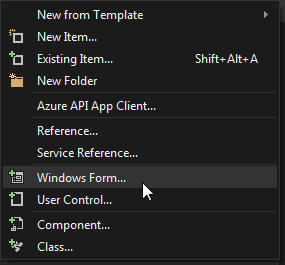
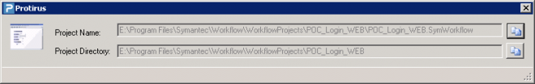

In this Article I'm going to explain how to add a Form to your Plugin to allow user interaction.
Table of Contents
Right Click | Add | Windows Form

Give it a name "xForm"
Change some Properties
| Property | Value |
|---|---|
| Text | Protirus |
| TopMost | True |
| MaxamizeBox | False |
| MinimizeBox | False |
| Icon | Set to one you've added or the default WF one. |
| FormBorderSize | FixedSingle |
| SizeGripStyle | Hide |
Add some labels and textboxes.
Set the Textboxes
| Property | Value |
|---|---|
| Enabled | False |
Add some buttons to copy the values to the clipboard.
Add a 'StatusStrip' and add a 'StatusLabel' to the Form, we've already set the properties on the Form.
| Property | Value |
|---|---|
| SizingGrip | False |
Add an PictureBox to display the Project Type.
Final Form

We will need a key from the ![Regedit [S]](images/RegeditS.png) Registry.
Registry.
It's a  String Value
String Value
Software\Wow6432Node\TransparentLogic.com\LogicBase Shared
Which returns
[Install Drive]:\Program Files\Symantec\Workflow\Shared\
| We can't hardcode the imagePath, as the install drive might be different, so use some code to get a RegKey instead. |
|---|
We need to add the following folders to the path.
\logicbaselib\ProjectTypes\
To get the image

Full path
E:\Program Files\Symantec\Workflow\Shared\logicbaselib\ProjectTypes\WebForm_48.png
| Note | There are some interesting files in this folder, if you look in the XML you will see the 'OldProjectType' name listed. |
|---|
Monitoring.xml
...
<OldProjectType>Metronome</OldProjectType>
As we are displaying information about the Project in the Form we need to pass the Project as an input.
public ProtirusForm(AbstractOrchestrationProject project)
{
InitializeComponent();
_project = project;
}
Code
using System.Windows.Forms;
using LogicBase.Core;
private AbstractOrchestrationProject _project;
private string imagePath = @"E:\Program Files\Symantec\Workflow\Shared\logicbaselib\ProjectTypes\";
public ProtirusForm(AbstractOrchestrationProject project)
{
InitializeComponent();
_project = project;
}
private void ProtirusForm_Load(object sender, EventArgs e)
{
string filePath = string.Format(@"{0}{1}", imagePath, _project.ProjectSetupData.ProjectType.ImageFileName);
pbProjectImage.Image = Image.FromFile(filePath);
txtProjectName.Text = _project.MainFile.FullName;
txtProjectDirectory.Text = _project.MainFile.DirectoryName;
}
#region <Button Clicks>
private void btnCopyProjectName_Click(object sender, EventArgs e)
{
Clipboard.SetText(txtProjectName.Text);
//Clipboard.SetDataObject(txtProjectName.Text, true);
toolStripStatusLabel1.Text = @"Copied 'Project Name' to Clipboard.";
}
private void btnCopyProjectDirectory_Click(object sender, EventArgs e)
{
Clipboard.SetText(txtProjectDirectory.Text);
//Clipboard.SetDataObject(txtProjectDirectory.Text, true);
toolStripStatusLabel1.Text = @"Copied 'Project Directory' to Clipboard.";
}
#endregion <Button Clicks>
To show the Form from the Plugins menu update the PerformAction method:
public void PerformAction(AbstractOrchestrationProject project)
{
ProtirusForm pF = new ProtirusForm(project);
pF.Show();
}